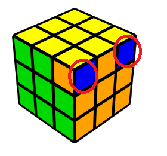

Hello everyone, today, I'm going to teach you how to solve a 3x3 Rubik's Cube. You might have read other tutorials before and started raging because of how complex they are, but this tutorial is nothing like that. I made this tutorial incredibly beginner-friendly, so someone like you can figure this out in no time. I have a YouTube channel, named CubeRind, where I have this tutorial in video format, in case you prefer that. Click here to find my channel.
<<<<<<< HEADLastly, we're going to permute the last layer, once you finish this step you will solve the entire cube, congratulations! But not so fast, you have to complete this step first. So what you need to do in this step is to look for some headlights.
By headlights, I mean this. The 2 blue colours that I circled make a headlight. Okay so you either have 4 headlights in which case you can skip this paragraph, you could have 1 or you could have none. I'm going to tell you what you do if you have none first, in this case, you have no headlights, none on either side. So in this case, just hold the cube anyway so long as the white side is on the bottom and yellow is on top. Now we're gonna do this algorithm, R’ F R’ B2 R F’ R’ B2 R2. Now you have one set of headlights, now I'm going to show you what to do at this stage. If you have one set of headlights, match the headlights with its side and then hold the cube so that that side is at the back. Yellow should still be on top. Then, do the same algorithm, R’ F R’ B2 R F’ R’ B2 R2 and you will get 4 headlights.
Now the last part of this step is to fix the edges, you may be lucky and skip this step, in which case, congratulations, you solve the cube! But to truly learn how to solve it you need to learn this part as well. The last part is to put these edges in the right place. First, match up the headlights with their correct sides. If you already have 1 side solved, go to the next paragraph. If not, continue reading this. So what you're gonna do is you're just gonna do this algorithm, F2 U then you go L and R’ but I like to think of it as you move both of these down, then F2, you do L’ and R but I'll think of it that you move both of these up, then U and F2, now that should have solved one of your sides.
Now what you're gonna do is make sure the solved side is matching to make the entire side and then hold it at the back. Then you're gonna do the same algorithm you did in the last part of this step. In case you skipped that part, here's the algorithm, F2 U L R’ F2 L’ R U F2. Now, either your cube is solved, or you need to do this algorithm one more time.
Congratulations! Thank you so much for reading this, if you subscribe to my YouTube channel, that would be extremely helpful. Here is the link: https://www.youtube.com/channel/UC6LgYLa1oSgTxxctR0rujdg/videos?sub_confirmation=1
======= >>>>>>> 0b27e9d9887f90f56962aa42c036aaf9f453851a